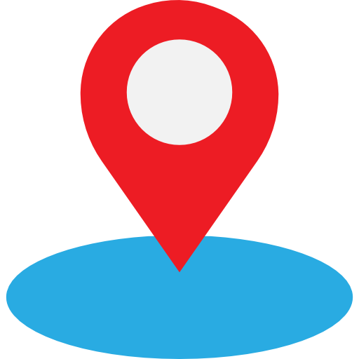

<ion-header color="primary">
  <ion-toolbar color="primary">
    <ion-buttons slot="start">
      <ion-menu-button></ion-menu-button>
    </ion-buttons>
    <ion-title>Página inicial</ion-title>
  </ion-toolbar>
</ion-header>

<ion-content>

  <ion-card height="90%">
    <ion-slides #mySlider pager="true" 
    [options]="sliderOpts" >
   <ion-slide>
    <h2 style="margin-top: 5px"> <b>Bem-Vindo ao LocalMe!</b></h2>
    
   </ion-slide>
   <ion-slide>
    <p><b>Consulte suas coordenadas</b></p>
    <p><b>Consulta de endereço por CEP</b></p>
    
   </ion-slide>
  </ion-slides>
  </ion-card>

  <ion-grid>
    <ion-item>
      <p>Acesso rápido: </p>
    </ion-item>
    
      <ion-col size="12">
        <ion-item routerLink="/maps" routerDirection="forward">
          <ion-icon slot="end" color="primary" name="navigate-outline"></ion-icon>
          <ion-label text-wrap >Minha localização</ion-label>
        </ion-item>
      </ion-col>
      <ion-col size="12">
        <ion-item routerLink="/documentos" routerDirection="forward">
          <ion-icon slot="end" color="primary" name="search-outline"></ion-icon>
          <ion-label text-wrap>Pequisar endereço</ion-label>
        </ion-item>
      </ion-col>
   
  </ion-grid>

    
  <ion-fab vertical="bottom" horizontal="end" slot="fixed">
    <ion-fab-button
    onclick="window.open('https:/github.com/hugofsd')">
      <ion-icon name="logo-github"></ion-icon>
    </ion-fab-button>
  </ion-fab>

  
  

</ion-content>
